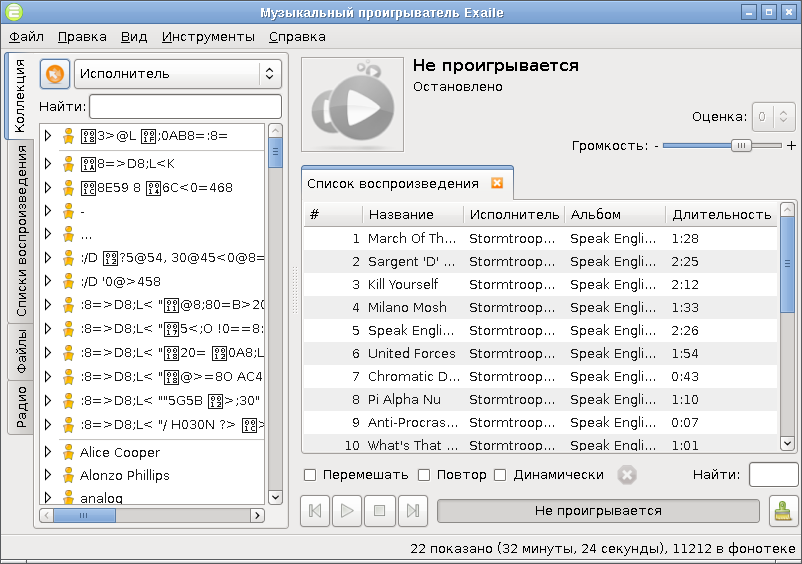
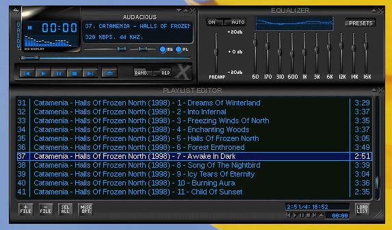
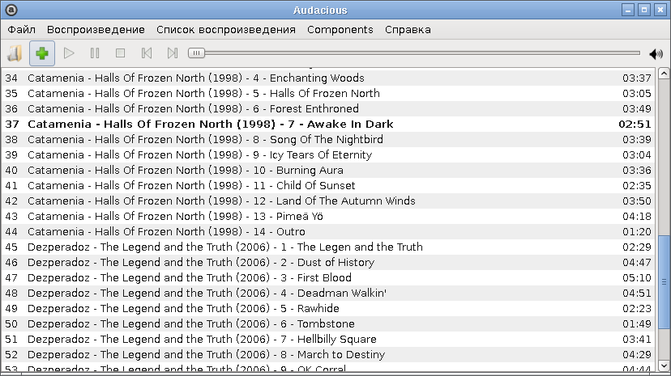
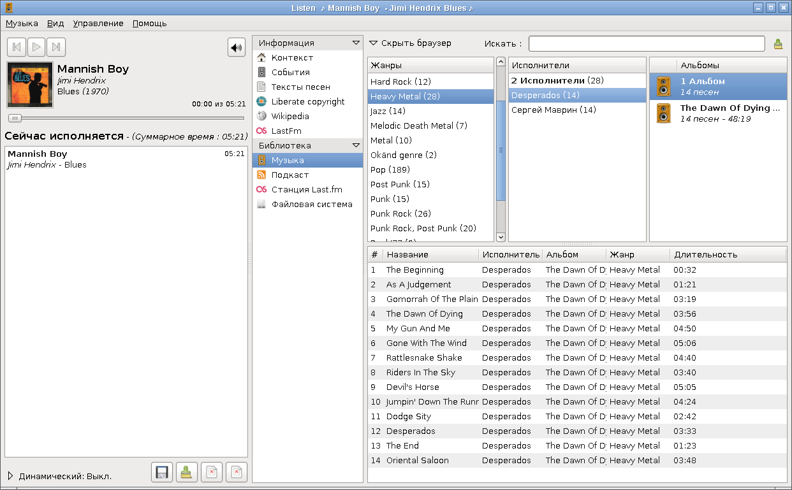
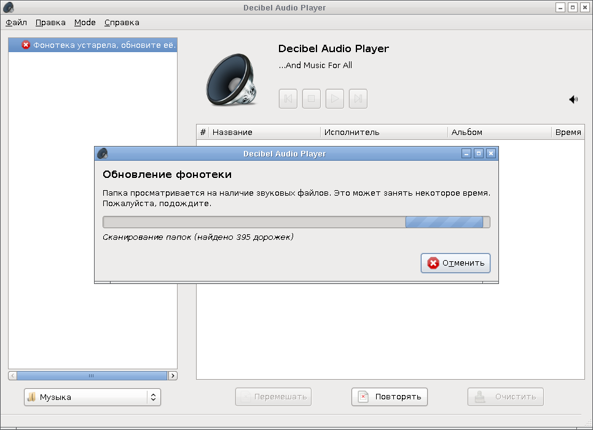
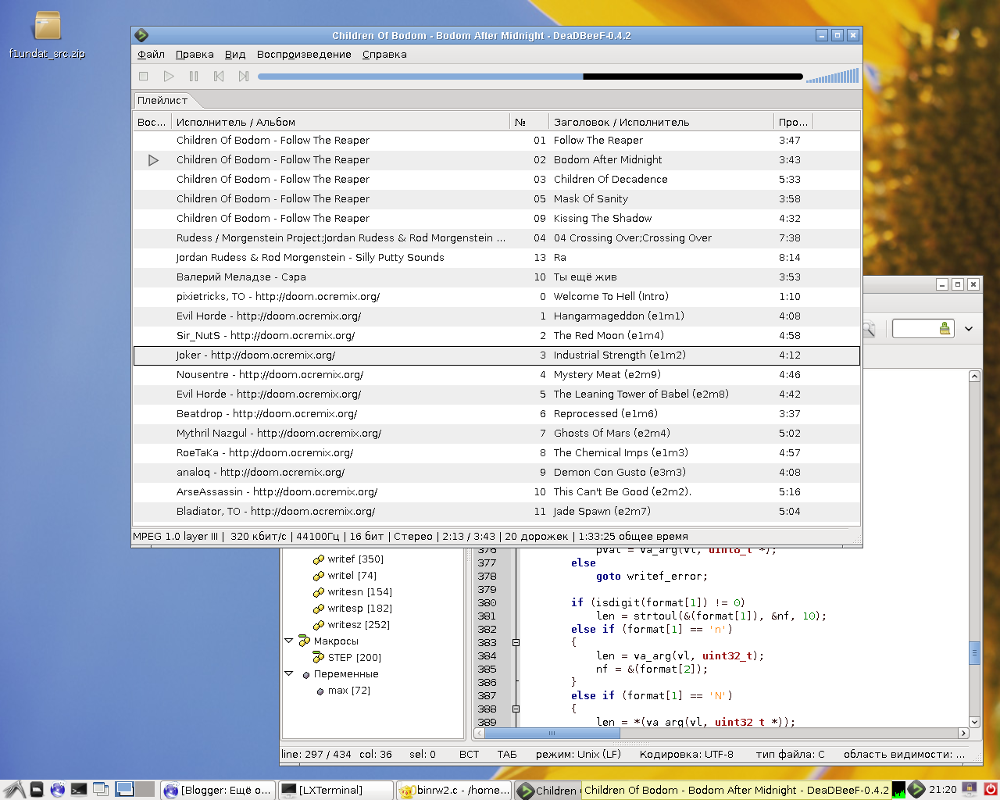

С аудиоплеерами в Linux, на мой взгляд, сложилась парадоксальная ситуация. Плееров много, но выбрать из них нечего. Даже с видеоплеерами и то лучше - можно выбрать практически любой и он не будет написан на Python, mono или завязан на KDE4. А вот в случае с аудиоплеерами всё не так.
Недавно я не вытерпел и перешёл с Lenny на Squeeze - в Lenny оказалось неожиданно много глюков. Судя по графику глюков, Squeeze уже сейчас содержит глюков меньше, чем Lenny. По случаю этого обновления мной на пробу были протестированы несколько плееров:
Exaile - написан на Python, практически точная копия Amarok. По непонятной причине не захотел играть mp3. Разбираться было лень, т.к. есть много других плееров - как грязи.
Audacious - вполне себе неплохой плеер с WinAMP-подобным интерфейсом. Всё бы ничего, но мне во-первых не очень нравятся программы со шкурками. Во-вторых, он не позволяет выбрать дорожку из многодорожечных FLAC-файлов. А в третьих, натерпелся я от него в Lenny глюков: неработающая поддержка MIDI, мёртвое зависание при попытке посмотреть свойства MIDI-файла, работающее через раз групповое добавление файлов.
Audacious GTK - вроде бы то, что надо, но невозможно двигать треки в списке, невозможно удалить несколько треков из списка за раз. Многодорожечные FLAC-файлы также не работают. Одним словом, покоцаный Audacious.
Listen Music Player - написан на Python. При обновлении библиотеки добавлял вновь обнаруженных артистов, альбомы и жанры в случайное место списка. В результате во время сканирования попытка запустить хоть какую-нибудь песню превращалась в увлекательную игру - попытка попасть мышью в только что увиденного артиста, который мгновенно убегал совершенно неожиданно то ли вверх по списку, то ли вниз. Уже выделенный однажды элемент так же неожиданно подменялся на другой случайный.
Decibel Audio Player - без сканирования фонотеки добавить в список воспроизведения хотя бы файлик не дал (нужно лезть в настройки, чтобы можно было выбрать файлы из определённой папки). Во время сканирования коллекции с плеером ничего невозможно сделать - он не отображает уже отсканированные песни и не позволяет их запустить прямо сейчас, пока будет сканироваться остальное.
DeaDBeeF - плеер, стремящийся стать аналогом Foobar2000. Установил из репозитория проекта пакет для Squeeze. Поддерживает многодорожечные FLAC. Но, не позволяет воспроизводить MIDI через ALSA, можно воспроизводить MIDI только через собственный хиленький программный синтезатор с примитивным звучанием типа OPL3. Остановился пока на нём.
